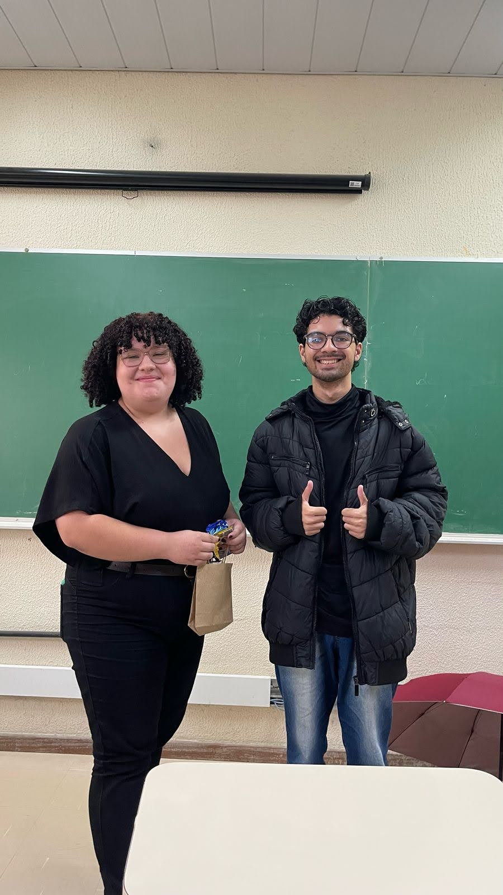
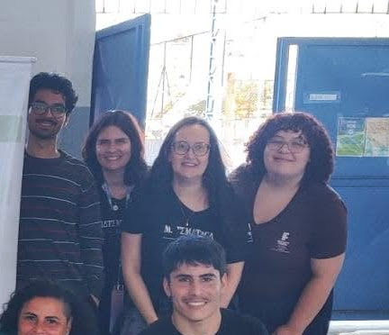
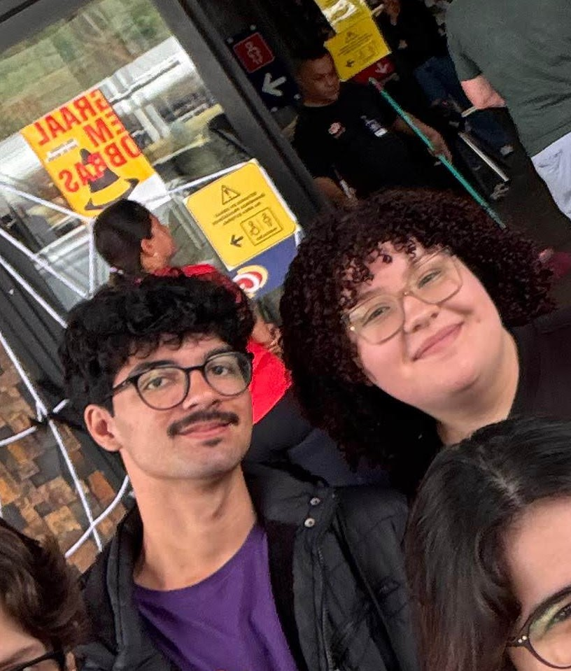
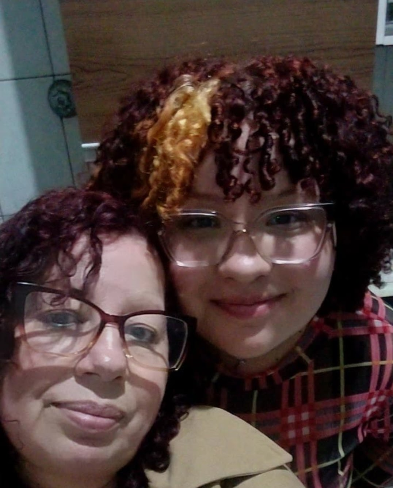
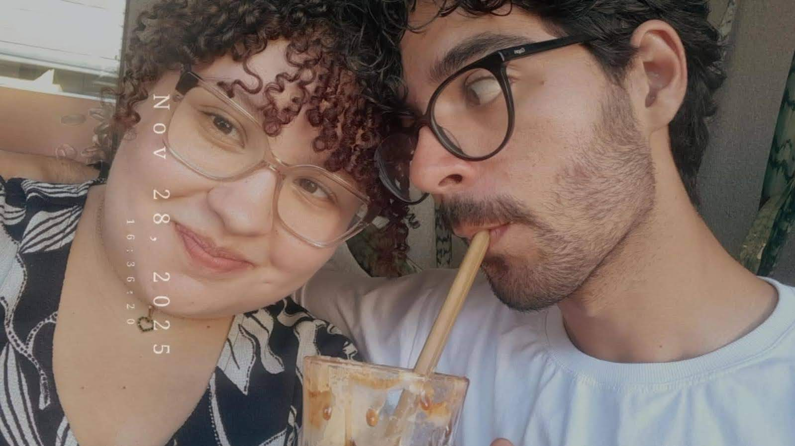
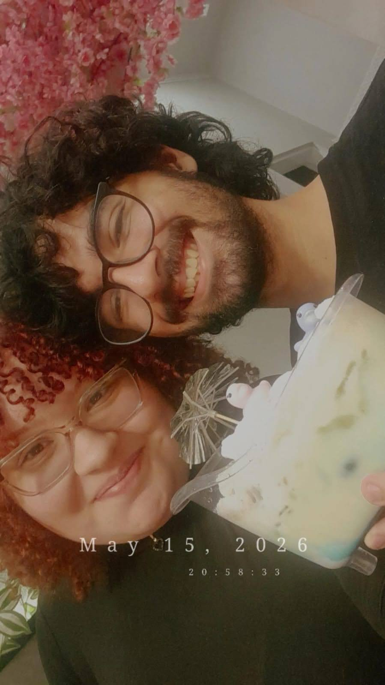

Essa é a história de como você virou minha pessoa favorita
Era só um sentimento estranho que eu não conseguia nomear

O jeitinho meigo e delicado que me cativou

A inteligência e dedicação que me conquistou
"Eu sabia que você era diferente. Desde o primeiro momento."
Quando percebi que você era mais que um sentimento

Estar ao seu lado me trazia conforto

Seu sorriso me trazia alegria
Foram pequenos passos que no fim se transformaram em algo incrível
"Você se tornou minha pessoa favorita em toda a existência. E eu sou tão grato por isso."
Como você transformou minha vida

Com você eu tenho um propósito maior

Porque você está aqui comigo
Preciso ser claro sobre algo importante
Eu sou apaixonado por você. Perdidamente apaixonado.
Você não é só um sentimento ou uma pessoa que gosto.
Você é a pessoa que faz meu coração bater mais forte,
que me faz sorrir mesmo nos piores dias,
que mudou completamente a forma como eu vejo o mundo.
Você é meu amor. Meu real, meu verdadeiro amor.
Confesso que me apaixonei por você muito antes do que já te contei, mas precisava de um tempo para
entender e aceitar isso em mim mesmo. Hoje eu entendo, e não consigo mais imaginar minha vida sem
você.
Eu te amo mais do que palavras podem expressar, e quero passar o resto da minha vida te mostrando isso.
Obrigado por ser quem você é, e por me deixar te amar do jeito que eu amo.
💚